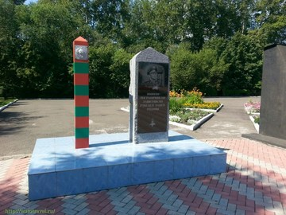
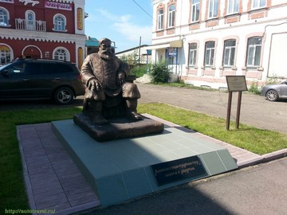
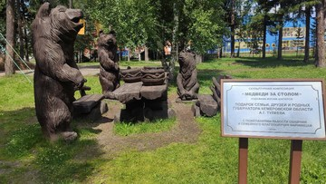

Достопримечательности города
В Парке победы установлены памятники неизвестному солдату, пограничникам, а также ликвидаторам аварии на Чернобыльской АЭС.
Памятник «Купец» установлен на ул. Ленина (бывшая Большая-Московская). Его прототипом стал Трифон Тимофеевич Савельев, глава самой авторитетной купеческой семьи Мариинска.
 Обустроенный городской парк. Создана крепостная стена, установлен фонтан, разбиты цветочные клумбы. 